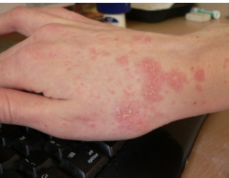

Tipos de sarna
Existen 2 tipos de sarna:
Sarna clásica: los síntomas característicos son erupción papular eritematosa, madrigueras (excavación en la piel producida por el ácaro) y prurito intenso, especialmente por la noche. En este tipo de sarna la persona suele estar infestada por 15-20 ácaros hembra
El prurito generalmente es más intenso por la noche, no responde a antihistamínicos (fármacos que sirven para reducir o eliminar los efectos de las alergias) y suele ser familiar.
La lesión característica es un surco acarino (camino que ha recorrido el ácaro en la epidermis), grisáceo, curvo, de menos de 1 cm, generalmente en zona de pliegues y difícil de encontrar. Las lesiones más típicas son pápulas o vesículas pequeñas y rojas, más numerosas que los surcos, que se unen en algunas áreas. Estas últimas están causadas por larvas. También se pueden encontrar lesiones eccematizadas a causa del rascado.
El prurito generalmente es más intenso por la noche, no responde a antihistamínicos (fármacos que sirven para reducir o eliminar los efectos de las alergias) y suele ser familiar. debajo de las cuales se encuentran miles o millones de ácaros hembra. El prurito suele ser leve o ausente
En niños, ancianos, inmunodeprimidos y en el trópico pueden darse formas graves de sarna con afectación en el cuero cabelludo